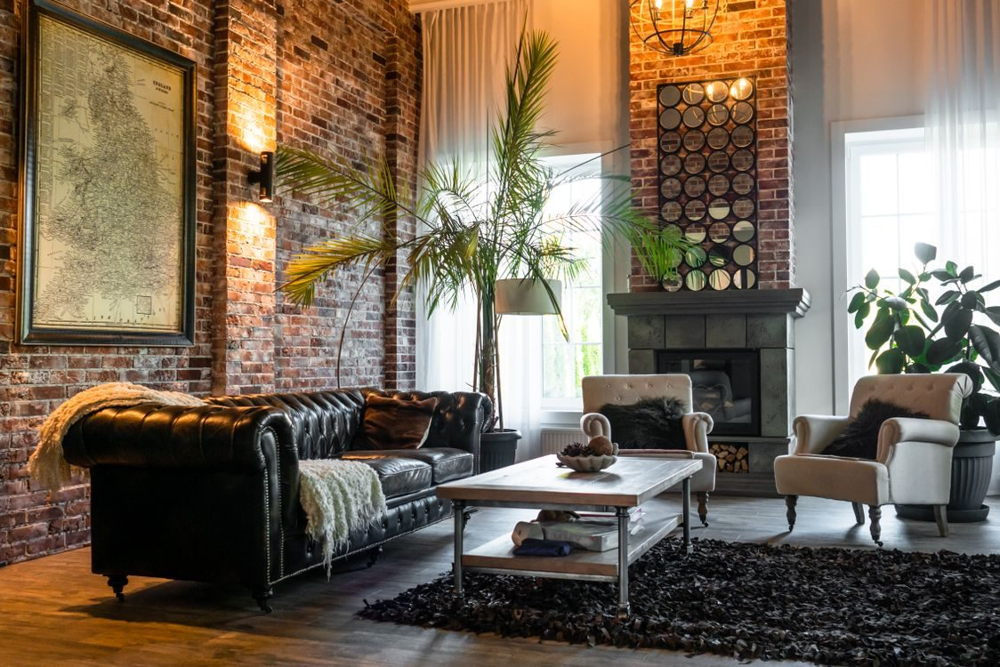
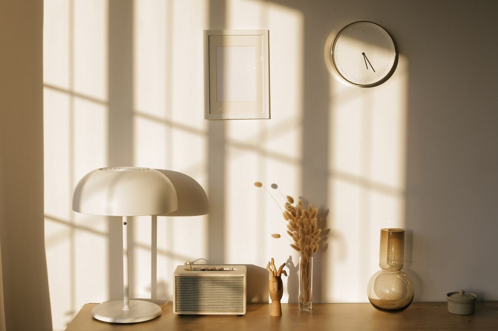
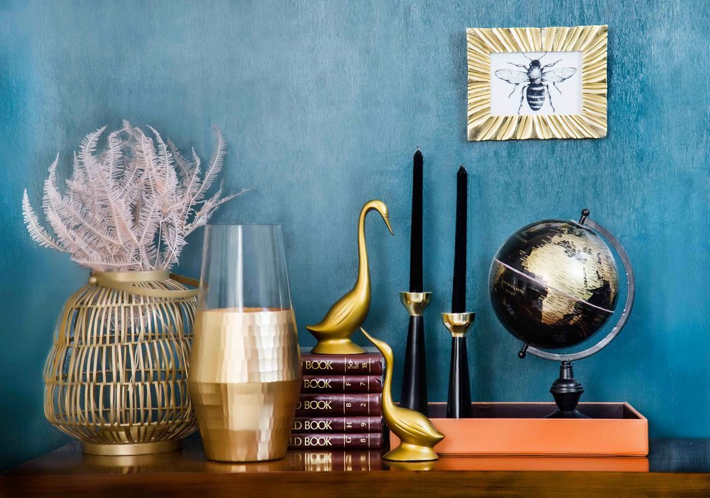

Thrifty Paws Boutique
A thrift boutique in West Columbia where every purchase funds Midlands animal rescue.
About
Thrifty Paws Boutique is a thrift boutique in West Columbia operated by Southern Paw Partners, Inc., a registered 501(c)(3) nonprofit. The shop sells gently used clothing, jewelry, furniture, home goods, books, and vintage items. All proceeds fund Midlands animal rescue, and the store says it has donated over $135,000 to over 37 animal rescue organizations.
In the shop
Gently used clothing
Gently used clothing, listed among the shop offerings.
Jewelry
Jewelry, listed among the shop offerings.
Furniture and home goods
Furniture and home goods, listed among the shop offerings.
Books and vintage items
Books and vintage items, listed among the shop offerings.
Donations
Donations accepted during business hours.
Curbside pickup for larger loads
Curbside pickup on request for larger donation loads.
Every purchase funds animal rescue
Thrifty Paws Boutique is operated by Southern Paw Partners, Inc. All proceeds fund Midlands animal rescue. Call (803) 967-6649 to ask about donating or shopping.
Gallery


All gallery photos are stock photos, labeled as such. They show vintage home goods of the kind sold here, not this shop's stock.
Visit
Address: 1230 C Ave, West Columbia, SC 29169
Hours: Tuesday to Friday 10:00 AM to 5:30 PM, Saturday 10:00 AM to 4:00 PM.
Phone: (803) 967-6649
Contact
Thrifty Paws Boutique serves West Columbia, SC. Questions? Call (803) 967-6649.